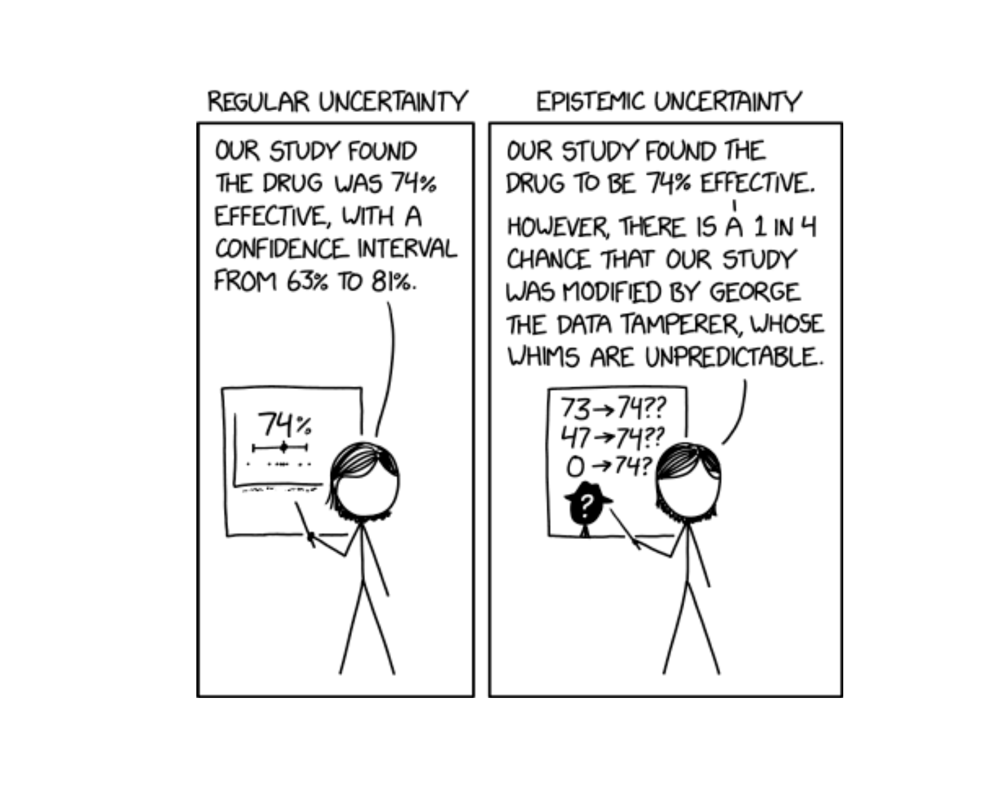

Lesson 26: WPR II Review

Break — March Madness Bracket Challenge
Don’t forget to fill out your bracket! Earn up to bonus points.
Go to the bracket app — pick cadets as your group.
WPR II Information
ImportantWPR II — Lesson 27
- Worth: 175 points
- Covers: Concepts from Lessons 17–25
- Time: 55 minutes
- Authorized: Course Statistics Reference Card (SRC) and the issued calculator
- Technology — R-Lite (
pt,qt,pnorm,qnormonly), no internet, no electronic devices
R-Lite Setup
WarningDo This NOW
You need R-Lite working on your computer before the WPR. It must be opened in Chrome or Firefox (it will not work in Edge or Safari).
- Download R-Lite.exe (or grab it from Canvas)
- Open R-Lite in Chrome or Firefox
- Test it — type
pnorm(1.96)and confirm you get0.9750021 - Test
pt(2, df = 10),qnorm(0.975), andqt(0.975, df = 10)
If it doesn’t work, troubleshoot now — not the day of the WPR. Practice the review problems below with R-Lite open.
Study Materials
What We Did: Lessons 17–25
NoteLesson 17: Central Limit Theorem
The Central Limit Theorem (CLT): If \(X_1, X_2, \ldots, X_n\) are iid with mean \(\mu\) and standard deviation \(\sigma\), then for large \(n\):
\[\bar{X} \sim N\left(\mu, \frac{\sigma^2}{n}\right)\]
Standard Error of the Mean: \(\sigma_{\bar{X}} = \frac{\sigma}{\sqrt{n}}\)
Rule of thumb: \(n \geq 30\) unless the population is already normal.
NoteLesson 18: Confidence Intervals I
Confidence Interval for a Mean:
| Formula | When to Use | |
|---|---|---|
| Large sample (\(n \geq 30\)) | \(\bar{X} \pm z_{\alpha/2} \cdot \dfrac{\sigma}{\sqrt{n}}\) | Random sample, independence, \(s \approx \sigma\) |
| Small sample (\(n < 30\)) | \(\bar{X} \pm t_{\alpha/2, n-1} \cdot \dfrac{s}{\sqrt{n}}\) | Random sample, independence, population ~ Normal |
Key ideas: Higher confidence → wider interval. Larger \(n\) → narrower interval.
NoteLesson 19: Confidence Intervals II
Confidence Interval for a Proportion:
\[\hat{p} \pm z_{\alpha/2} \cdot \sqrt{\frac{\hat{p}(1-\hat{p})}{n}}\]
Conditions: \(n\hat{p} \geq 10\) and \(n(1-\hat{p}) \geq 10\)
Interpretation: “We are C% confident that [interval] captures the true [parameter in context].” The confidence level describes the method’s long-run success rate, not the probability any single interval is correct.
NoteLesson 20: Intro to Hypothesis Testing
Every hypothesis test follows four steps:
- State hypotheses: \(H_0\) (null — status quo) vs. \(H_a\) (alternative — what we want to show)
- Compute a test statistic: How far is our sample result from what \(H_0\) predicts?
- Find the \(p\)-value: If \(H_0\) were true, how likely is a result this extreme or more?
- Make a decision: If \(p \leq \alpha\), reject \(H_0\). If \(p > \alpha\), fail to reject \(H_0\).
NoteLesson 21: One Sample t-Test
One-sample \(t\)-test for a mean (\(\sigma\) unknown):
\[t = \frac{\bar{x} - \mu_0}{s / \sqrt{n}}, \qquad df = n - 1\]
Conditions: Random sample, independence (\(n < 10\%\) of population), population approximately normal or \(n \geq 30\).
\(p\)-value: Use pt() with \(df = n-1\).
NoteLesson 22: One Proportion Z-Test
One-proportion \(z\)-test:
\[z = \frac{\hat{p} - p_0}{\sqrt{\dfrac{p_0(1 - p_0)}{n}}}\]
Conditions: \(np_0 \geq 10\) and \(n(1-p_0) \geq 10\) (use \(p_0\), not \(\hat{p}\)!)
\(p\)-value: Use pnorm().
NoteLesson 23: Two Sample t-Test
Two-sample test for means from two independent groups:
\[t = \frac{(\bar{x}_1 - \bar{x}_2) - \Delta_0}{\sqrt{\dfrac{s_1^2}{n_1} + \dfrac{s_2^2}{n_2}}}\]
- Large samples (\(n_1, n_2 \geq 30\)): Use \(z\) (standard normal). \(p\)-value via
pnorm(). - Small samples: Use \(t\) with \(df = \min(n_1 - 1,\; n_2 - 1)\). \(p\)-value via
pt().
CI for \(\mu_1 - \mu_2\): \((\bar{x}_1 - \bar{x}_2) \pm t_{\alpha/2} \cdot SE\)
Conditions: Two independent random samples. Both populations approximately normal, or both \(n \geq 30\).
NoteLesson 24: Paired t-Test
Paired data arise when the same subjects are measured twice (or matched one-to-one). Compute differences, then run a one-sample \(t\)-test:
\[t = \frac{\bar{d} - \Delta_0}{s_d / \sqrt{n}}, \qquad df = n - 1\]
CI for \(\mu_d\): \(\bar{d} \pm t_{\alpha/2, \, n-1} \cdot \dfrac{s_d}{\sqrt{n}}\)
Why pair? Pairing removes between-subject variability, giving more power to detect a real effect.
NoteLesson 25: Two Population Proportions
Pooled proportion (used in hypothesis tests):
\[\hat{p} = \frac{x_1 + x_2}{n_1 + n_2}\]
Test statistic:
\[z = \frac{(\hat{p}_1 - \hat{p}_2) - \Delta_0}{\sqrt{\hat{p}(1-\hat{p})\left(\dfrac{1}{n_1} + \dfrac{1}{n_2}\right)}}\]
CI for \(p_1 - p_2\) (uses unpooled SE):
\[(\hat{p}_1 - \hat{p}_2) \pm z_{\alpha/2} \cdot \sqrt{\frac{\hat{p}_1(1-\hat{p}_1)}{n_1} + \frac{\hat{p}_2(1-\hat{p}_2)}{n_2}}\]
Conditions: \(n_1 \hat{p}_1 \geq 10\), \(n_1(1-\hat{p}_1) \geq 10\), \(n_2 \hat{p}_2 \geq 10\), \(n_2(1-\hat{p}_2) \geq 10\)
The Hypothesis Test — Step by Step
Every hypothesis test you’ve seen in this block — one mean, one proportion, two means, paired, two proportions — follows the exact same steps. Let’s walk through them carefully, because this is what the WPR is testing.
Step 0: Identify the Test & Check Conditions
Before you do any math, answer two questions: What test am I running? and Is it valid?
Pick the Test
flowchart TD
A["What type of data?"] --> B["Quantitative<br/>(means)"]
A --> C["Categorical<br/>(proportions)"]
B --> D["How many samples?"]
C --> H["How many samples?"]
D --> E["One sample"]
D --> F["Two samples"]
E --> E1["n ≥ 30?"]
E1 -->|Yes| E2["<b>One-sample z-test</b><br/>Parameter: μ<br/><i>Lesson 21</i>"]
E1 -->|No| E3["<b>One-sample t-test</b><br/>Parameter: μ<br/>df = n − 1<br/><i>Lesson 21</i>"]
F --> F1["Same subjects<br/>measured twice?"]
F1 -->|Yes| F2["<b>Paired t-test</b><br/>Parameter: μ_d<br/>df = n − 1<br/><i>Lesson 24</i>"]
F1 -->|No| F4["Both n ≥ 30?"]
F4 -->|Yes| F5["<b>Two-sample z-test</b><br/>Parameter: μ₁ − μ₂<br/><i>Lesson 23</i>"]
F4 -->|No| F6["<b>Two-sample t-test</b><br/>Parameter: μ₁ − μ₂<br/>df = min(n₁−1, n₂−1)<br/><i>Lesson 23</i>"]
H --> I["One sample"]
H --> J["Two samples"]
I --> K["<b>One-proportion z-test</b><br/>Parameter: p<br/><i>Lesson 22</i>"]
J --> L["<b>Two-proportion z-test</b><br/>Parameter: p₁ − p₂<br/><i>Lesson 25</i>"]
style E2 fill:#e8f4e8,stroke:#333
style E3 fill:#e8f4e8,stroke:#333
style F2 fill:#e8f4e8,stroke:#333
style F5 fill:#e8f4e8,stroke:#333
style F6 fill:#e8f4e8,stroke:#333
style K fill:#e8f4e8,stroke:#333
style L fill:#e8f4e8,stroke:#333
Key questions: Means or proportions? One or two samples? Paired or independent? Large or small \(n\)?
Check Conditions
Once you know the test, verify the conditions:
| Test | Conditions |
|---|---|
| One-sample \(t\) | Random sample. Population ~ Normal, or \(n \geq 30\) (CLT). |
| One-proportion \(z\) | Random sample. \(np_0 \geq 10\) and \(n(1-p_0) \geq 10\). Use \(p_0\), not \(\hat{p}\)! |
| Two-sample \(t\) | Two independent random samples. Both populations ~ Normal, or both \(n \geq 30\). |
| Paired \(t\) | Random sample of paired observations. Differences ~ Normal, or \(n \geq 30\). |
| Two-proportion \(z\) | Two independent random samples. \(n_i\hat{p} \geq 10\) and \(n_i(1-\hat{p}) \geq 10\) for both groups. |
WarningDon’t Skip This
If conditions aren’t met, the test isn’t valid. Always show your work checking them.
Step 1: State the Hypotheses
Write \(H_0\) and \(H_a\) in terms of the population parameter (\(\mu\), \(p\), \(\mu_1 - \mu_2\), \(\mu_d\), \(p_1 - p_2\)) — never in terms of \(\bar{x}\) or \(\hat{p}\).
- \(H_0\) is always “\(=\)” (the status quo)
- \(H_a\) is what you’re trying to show (\(\neq\), \(<\), or \(>\))
Step 2: Compute the Test Statistic
Every test statistic has the same structure:
\[\text{test stat} = \frac{\text{estimate} - \text{null value}}{SE}\]
Step 3: Find the p-value
The \(p\)-value answers: If \(H_0\) were true, how likely is a result this extreme?
Use R-Lite:
| Direction | \(z\)-test | \(t\)-test |
|---|---|---|
| Left-tailed (\(<\)) | pnorm(z) |
pt(t, df) |
| Right-tailed (\(>\)) | 1 - pnorm(z) |
1 - pt(t, df) |
| Two-tailed (\(\neq\)) | 2*(1 - pnorm(abs(z))) |
2*(1 - pt(abs(t), df)) |
Step 4: Decide and Conclude
- \(p \leq \alpha\) → Reject \(H_0\).
- \(p > \alpha\) → Fail to reject \(H_0\).
ImportantHow to Write the Conclusion
Reject: “At the [α]% significance level, there is sufficient evidence that [restate \(H_a\) in context].”
Fail to reject: “At the [α]% significance level, there is not sufficient evidence that [restate \(H_a\) in context].”
Never say “accept 🤮 \(H_0\).” Never say “the null is true.” Always write it in context.
Let’s Do One Together
A university wellness office wants to know whether a new digital detox program affects students’ average daily screen time. Before the program, the average was 4.2 hours per day.
After the program, a random sample of 2,000 students had:
- \(\bar{x} = 4.12\) hours
- \(s = 1.8\) hours
Test at \(\alpha = 0.05\) whether the program changed average daily screen time.
Step 0: Check Conditions
- Random sample ✓ (stated)
- \(n = 2{,}000 \geq 30\) ✓ — CLT applies, so \(\bar{X}\) is approximately normal
Conditions met — \(n \geq 30\), so we use a one-sample \(z\)-test.
Step 1: Hypotheses
The wellness office wants to know if screen time changed:
\[H_0: \mu = 4.2 \qquad \text{vs.} \qquad H_a: \mu \neq 4.2\]
Step 2: Test Statistic
\[z = \frac{\bar{x} - \mu_0}{s / \sqrt{n}} = \frac{4.12 - 4.2}{1.8 / \sqrt{2000}} = \frac{-0.080}{0.0402} = -1.988\]
xbar <- 4.12; mu0 <- 4.2; s <- 1.8; n <- 2000
se <- s / sqrt(n)
z_stat <- (xbar - mu0) / se
z_stat[1] -1.987616Step 3: p-value
Two-tailed test — shade both sides:
p_value <- 2 * (1 - pnorm(abs(z_stat)))
p_value[1] 0.04685418Step 4: Conclusion
\(p = 0.04685 \leq 0.05\). We reject \(H_0\). At the 5% significance level, there is sufficient evidence that the digital detox program changed average daily screen time.
Confidence Interval
\[\bar{x} \pm z_{\alpha/2} \cdot \frac{s}{\sqrt{n}} = 4.12 \pm 1.960 \cdot 0.0402 = 4.12 \pm 0.079\]
z_crit <- qnorm(0.975)
me <- z_crit * se
c(xbar - me, xbar + me)[1] 4.028909 4.211091We are 95% confident that the true average daily screen time is between 4.029 and 4.211 hours. Since 4.2 is inside this interval, this is consistent with failing to reject \(H_0\).
But Wait — Look at the Actual Difference
We rejected \(H_0\). The program “works.” But the difference is 0.08 hours — that’s about 5 minutes per day.
Is that worth rolling out a campus-wide digital detox program? Probably not.
Statistical vs. Practical Significance
WarningA Small p-value Doesn’t Mean a Big Effect
- Statistically significant means the data are unlikely under \(H_0\) — the effect is probably real.
- Practically significant means the effect is big enough to matter.
With a huge sample, \(SE\) gets tiny, so even a meaningless difference produces a small \(p\)-value. The test has so much power that it detects effects too small to care about.
Always ask: “Is the difference large enough to change a decision?”
- 6 minutes of heat downtime per Soldier? Probably not worth a protocol change.
- 0.3 points on a 100-point exam? No instructor changes policy over that.
- 12 seconds on a 2-hour ruck? A commander doesn’t care.
Look at the effect size (how big is the difference?), not just the \(p\)-value (is it real?).
Sample Size: How Many Do You Need?
The example above raises a natural question: How many Soldiers do you actually need to detect a difference?
We can work backward from the test statistic. We need:
\[\frac{|\bar{x} - \mu_0|}{s / \sqrt{n}} > z_\alpha\]
Solve for \(n\):
\[n > \left(\frac{z_\alpha \cdot s}{|\bar{x} - \mu_0|}\right)^2\]
Example
Your commander wants to show the squad’s average 2-mile run time has improved from 16.0 minutes. You estimate the true mean is 15.2 minutes with \(s = 3.0\). How many Soldiers at \(\alpha = 0.05\)?
\[n > \left(\frac{1.645 \times 3.0}{|15.2 - 16.0|}\right)^2 = \left(\frac{4.935}{0.800}\right)^2 = (6.169)^2 = 38.1 \qquad \Rightarrow \qquad n \geq 39\]
z_alpha <- qnorm(0.95)
n_needed <- (z_alpha * 3.0 / 0.8)^2
ceiling(n_needed)[1] 39Key Review Concepts
Before we get to practice, a few things that trip people up.
Writing Conclusions and Interpreting CIs
ImportantCI Interpretation Template
“We are [C]% confident that the true [parameter in context] is between [lower] and [upper].”
Wrong: “There is a 95% probability that the true mean is in this interval.”
The true mean is fixed — it’s either in there or it’s not. The 95% describes the method: if we repeated this many times, 95% of intervals would contain the truth.
CI–Hypothesis Test Duality
A CI and a HT at the same \(\alpha\) always agree:
- Null value outside the CI → Reject \(H_0\)
- Null value inside the CI → Fail to reject \(H_0\)
Example: A 90% CI for \(\mu\) is \((45, 55)\). Testing \(H_0: \mu = 60\) at \(\alpha = 0.10\): since 60 is not in \((45, 55)\), we reject \(H_0\).
Practice Problems
One problem per concept. Work these with R-Lite open.
Problem 1: Which Test?
NoteQuestions
A commander claims at least 80% of Soldiers passed the AFT. You survey 150.
A researcher measures reaction time for 25 cadets before and after drinking coffee.
Two platoons (30 each) complete a ruck march. Compare average times.
15 cadets have \(\bar{x} = 3.2\) GPA. Test if the true mean differs from 3.0.
Two companies report AFT pass rates. Is there a difference?
TipAnswers
One-proportion \(z\)-test. One sample, testing a claimed proportion.
Paired \(t\)-test. Same cadets measured before and after.
Two-sample \(t\)-test. Different Soldiers, \(n_1, n_2 \geq 30\).
One-sample \(t\)-test. One mean, \(\sigma\) unknown.
Two-proportion \(z\)-test. Comparing proportions from two independent groups.
Problem 2: CI Interpretation & CI–HT Duality
A 95% CI for the average recovery time after surgery is \((4.2, 6.8)\) days.
NoteQuestions
Interpret this interval in context.
A hospital administrator claims the mean is 7 days. At \(\alpha = 0.05\), what is your conclusion — without computing a test statistic?
Which is correct?
- There is a 95% probability that the true mean is between 4.2 and 6.8.
- If we repeated this study many times, 95% of the resulting intervals would contain the true mean.
TipAnswers
We are 95% confident that the true mean recovery time is between 4.2 and 6.8 days.
Since \(7.0\) is outside the CI, we reject \(H_0: \mu = 7\) at \(\alpha = 0.05\). There is sufficient evidence that the true mean recovery time is not 7 days.
(ii) is correct. The CI describes the method’s long-run success rate.
Problem 3: One-Sample t-Test
A platoon leader believes her platoon’s average land navigation score has improved beyond the 70-point historical average. A sample of 12 Soldiers has \(\bar{x} = 74.5\) and \(s = 8.2\).
NoteQuestions
State the hypotheses.
Check the conditions.
Compute the test statistic and \(p\)-value.
At \(\alpha = 0.05\), state your conclusion in context.
Construct a 95% CI for the true mean.
TipAnswers
\(H_0: \mu = 70\) vs. \(H_a: \mu > 70\)
Random sample (stated). \(n = 12 < 30\), so we need the population to be approximately normal — land nav scores are plausibly normal. ✓
\(t = \dfrac{74.5 - 70}{8.2 / \sqrt{12}} = \dfrac{4.5}{2.367} = 1.901\), \(\quad df = 11\)
t_stat <- (74.5 - 70) / (8.2 / sqrt(12))
p_value <- 1 - pt(t_stat, df = 11)
c(t_stat, p_value)[1] 1.90103137 0.04190201\(p = 0.0419 \leq 0.05\), so we reject \(H_0\). At the 5% significance level, there is sufficient evidence that the platoon’s average land nav score exceeds 70.
\(74.5 \pm 2.201 \cdot \dfrac{8.2}{\sqrt{12}} = 74.5 \pm 5.21 = (69.3, 79.7)\)
t_crit <- qt(0.975, df = 11)
me <- t_crit * 8.2 / sqrt(12)
c(74.5 - me, 74.5 + me)[1] 69.28997 79.71003Problem 4: One-Proportion z-Test
A brigade commander claims that at least 75% of NCOs have completed required online modules. A random sample of 160 NCOs reveals that 108 have completed them.
NoteQuestions
State the hypotheses.
Verify the conditions.
Compute the test statistic, \(p\)-value, and state your conclusion at \(\alpha = 0.05\).
Construct a 95% CI for the true proportion.
TipAnswers
\(H_0: p = 0.75\) vs. \(H_a: p < 0.75\)
\(np_0 = 160(0.75) = 120 \geq 10\) ✓ and \(n(1-p_0) = 160(0.25) = 40 \geq 10\) ✓
\(\hat{p} = 108/160 = 0.675\)
\[z = \frac{0.675 - 0.75}{\sqrt{0.75(0.25)/160}} = \frac{-0.075}{0.0342} = -2.19\]
p_hat <- 108 / 160
z_stat <- (p_hat - 0.75) / sqrt(0.75 * 0.25 / 160)
p_value <- pnorm(z_stat)
c(z_stat, p_value)[1] -2.19089023 0.01422987\(p = 0.0143 \leq 0.05\), so we reject \(H_0\). At the 5% significance level, there is sufficient evidence that the true proportion of NCOs who completed the modules is less than 75%.
- \(0.675 \pm 1.960 \cdot \sqrt{0.675(0.325)/160} = 0.675 \pm 0.073 = (0.602, 0.748)\)
We are 95% confident the true proportion is between 60.2% and 74.8%. Since 0.75 is outside this interval, it is consistent with rejecting \(H_0\).
Problem 5: Two-Sample t-Test
Two companies complete a field exercise. The S3 wants to know if there’s a difference in average completion times.
| Alpha Co | Bravo Co | |
|---|---|---|
| \(n\) | 45 | 50 |
| \(\bar{x}\) (hours) | 6.8 | 7.5 |
| \(s\) | 1.9 | 2.3 |
NoteQuestions
Why is this a two-sample test and not a paired test?
Check the conditions.
Conduct a two-tailed test at \(\alpha = 0.05\).
Construct a 95% CI for \(\mu_1 - \mu_2\).
TipAnswers
Different Soldiers in each company — no natural one-to-one pairing.
Two independent random samples. \(n_1 = 45 \geq 30\) ✓ and \(n_2 = 50 \geq 30\) ✓ — CLT applies to both.
\(H_0: \mu_1 - \mu_2 = 0\) vs. \(H_a: \mu_1 - \mu_2 \neq 0\)
\[z = \frac{(6.8 - 7.5) - 0}{\sqrt{1.9^2/45 + 2.3^2/50}} = \frac{-0.700}{0.431} = -1.62\]
se <- sqrt(1.9^2/45 + 2.3^2/50)
z_stat <- (6.8 - 7.5) / se
p_value <- 2 * (1 - pnorm(abs(z_stat)))
c(z_stat, p_value)[1] -1.6229892 0.1045917\(p = 0.105 > 0.05\), so we fail to reject \(H_0\). At the 5% significance level, there is insufficient evidence of a difference in average completion times.
- \((6.8 - 7.5) \pm 1.960 \cdot 0.431 = -0.700 \pm 0.845 = (-1.55, 0.145)\)
The interval contains zero, consistent with failing to reject.
Problem 6: Paired t-Test
A drill sergeant has 10 Soldiers complete an obstacle course, then puts them through a 3-week agility program and has them run it again. Summary: \(\bar{d} = -2.4\) min (After \(-\) Before), \(s_d = 3.1\) min.
NoteQuestions
Why is this paired and not two-sample?
State the hypotheses to show the program reduced times.
Check conditions, compute the test statistic and \(p\)-value, and conclude at \(\alpha = 0.05\).
TipAnswers
The same 10 Soldiers are measured before and after — each Soldier is their own control.
Since \(d = \text{After} - \text{Before}\), a reduction means \(\mu_d < 0\):
\(H_0: \mu_d = 0\) vs. \(H_a: \mu_d < 0\)
- \(n = 10 < 30\), so we need differences approximately normal — plausible for obstacle course times. ✓
\(t = \dfrac{-2.4}{3.1 / \sqrt{10}} = \dfrac{-2.4}{0.980} = -2.449\), \(\quad df = 9\)
t_stat <- -2.4 / (3.1 / sqrt(10))
p_value <- pt(t_stat, df = 9)
c(t_stat, p_value)[1] -2.44821496 0.01843225\(p = 0.0185 \leq 0.05\), so we reject \(H_0\). At the 5% significance level, there is sufficient evidence that the agility program reduced obstacle course times.
Problem 7: Two-Proportion z-Test
Two battalions compare AFT pass rates:
| 1st Bn | 2nd Bn | |
|---|---|---|
| \(n\) | 120 | 140 |
| Passed | 96 | 98 |
NoteQuestions
Check conditions and test whether the pass rates differ at \(\alpha = 0.05\).
Construct a 95% CI for \(p_1 - p_2\).
TipAnswers
- \(\hat{p}_1 = 96/120 = 0.800\), \(\hat{p}_2 = 98/140 = 0.700\)
\(\hat{p} = (96 + 98)/(120 + 140) = 194/260 = 0.746\) (pooled)
Conditions: \(n_1\hat{p} = 120(0.746) = 89.5 \geq 10\) ✓, \(n_1(1-\hat{p}) = 30.5 \geq 10\) ✓, \(n_2\hat{p} = 104.4 \geq 10\) ✓, \(n_2(1-\hat{p}) = 35.6 \geq 10\) ✓
\(H_0: p_1 - p_2 = 0\) vs. \(H_a: p_1 - p_2 \neq 0\)
\[z = \frac{0.800 - 0.700}{\sqrt{0.746(0.254)(1/120 + 1/140)}} = \frac{0.100}{0.0541} = 1.849\]
p1 <- 96/120; p2 <- 98/140
p_pool <- (96 + 98) / (120 + 140)
se <- sqrt(p_pool * (1 - p_pool) * (1/120 + 1/140))
z_stat <- (p1 - p2) / se
p_value <- 2 * (1 - pnorm(abs(z_stat)))
c(z_stat, p_value)[1] 1.84700675 0.06474616\(p = 0.0645 > 0.05\), so we fail to reject \(H_0\). At the 5% significance level, there is insufficient evidence that the AFT pass rates differ.
- CI uses unpooled SE:
\[(0.800 - 0.700) \pm 1.960 \cdot \sqrt{\frac{0.800(0.200)}{120} + \frac{0.700(0.300)}{140}} = 0.100 \pm 0.105 = (-0.005, 0.205)\]
The interval contains zero, consistent with failing to reject.
Problem 8: Statistical vs. Practical Significance
A study of 5,000 cadets finds that cadets who eat breakfast score an average of 85.1 on a math exam, compared to 84.8 for those who skip breakfast. The test yields \(p = 0.04\).
NoteQuestions
Is the result statistically significant at \(\alpha = 0.05\)?
Is the result practically significant? Why or why not?
Why might the \(p\)-value be so small despite such a tiny difference?
TipAnswers
Yes — \(p = 0.04 < 0.05\), so we reject \(H_0\).
No — a 0.3-point difference on an exam is negligible. No instructor would change policy over 0.3 points.
With \(n = 5{,}000\), the standard error is tiny, so even a meaningless difference produces a large test statistic.
Problem 9: Sample Size for a Hypothesis Test
A platoon leader wants to show her platoon’s average land nav score exceeds 70. She estimates the true mean is 74.5 with \(s = 8.2\). How many Soldiers does she need at \(\alpha = 0.01\)?
NoteQuestion
Use \(n > \left(\dfrac{z_\alpha \cdot s}{|\bar{x} - \mu_0|}\right)^2\).
TipAnswer
\[n > \left(\frac{2.326 \times 8.2}{|74.5 - 70|}\right)^2 = \left(\frac{19.07}{4.5}\right)^2 = (4.238)^2 = 17.96\]
z_alpha <- qnorm(0.99)
n_needed <- (z_alpha * 8.2 / 4.5)^2
ceiling(n_needed)[1] 18She needs at least 18 Soldiers.
Next Lesson
Upcoming Graded Events
- WPR II — Lesson 27